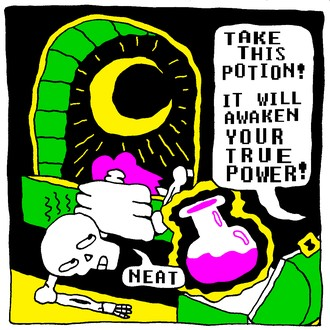
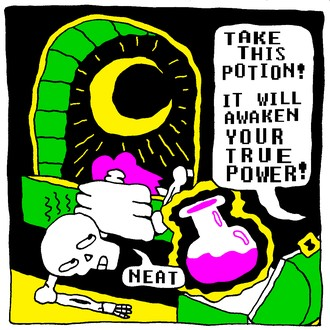

FEATURES, CONTRIBUTIONS TO OTHER PROJECTS, CLIENT WORK, AND FREELANCE |
POWERWASHER / CONSUMER CULTURE SPLIT 7" |
~~~~~~~~~~
MOTLEY MAG VOL.4=5 |
~~~~~~~~~~
ILLUSTRATED TAPES #156 |
~~~~~~~~~~
THE INFINITE CORPSE |
 
~~~~~~~~~~
SONIC HEAVEN |
~~~~~~~~~~
SPONGEBOB ZINEPANTS |
~~~~~~~~~~
SENTIENT PLANET LOGO |